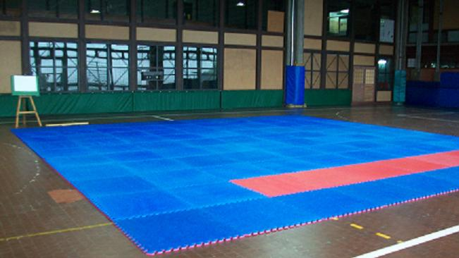

Clases

Al lugar de práctica se lo denomina "dojo", en el cual se guardan normas de etiqueta, limpieza personal, limpieza del espacio de práctica y formas de comportamiento apropiadas para una disciplina donde el respeto por uno mismo y por los demás es fundamental para el desarrollo de los estudiantes.
La Clase se desarrolla en el Gimnasio del 1er Piso del Pabellón II de Ciudad Universitaria (Facultad de Ciencias Exactas y Naturales - UBA), en los siguientes horarios: Martes de 18:00 a 20:00 horas y los Viernes de 18:00 a 19:00 horas (en Ciudad Universitaria), pero si vivís lejos y no podés participar de las clases presenciales, podés tomar clases por Zoom (solo tenés que solicitar las credenciales para el ingreso ya sea por WhatsApp +54 9 11 6911-3055, por Email o a través del grupo de Facebook).
Llegamos unos 15 minutos antes para cambiarnos, armar y limpiar los tatamis (piso para la práctica de artes marciales) tanto para principiantes (más blando) como para avanzados (mas estable), preparamos las armas: Tanto - Bokken - Jo (cuchillo - espada - palo), y nos ubicamos para el saludo inicial.
La práctica cuenta con diferentes partes y el Profesor Norberto Kiman, te guiará en el transcurso de las mismas: ejercicios para la salud, respiración, preparación de roladas, análisis detallado de alguna de las técnicas (con y sin armas), práctica libre por niveles, estiramientos y meditación. Luego de la clase se realiza el doblado de hakamas mientras se limpia, desarma y guarda el tatami. Contamos con vestuario y duchas para utilizar al término de las mismas.
La ropa, para comenzar a practicar, puede ser un jogging o ropa cómoda que permita el desplazamiento por el tatami, con el tiempo se utiliza un dogi (traje para artes marciales) y los alumnos de mayor experiencia utilizan Hakama (especie de pantalón negro y amplio).
Para acceder a la clase, no es necesario ser alumno de la facultad, la misma está abierta a toda la comunidad y es gratuita. Se solicita puntualidad y compromiso para con los horarios de práctica y la presentación de un certificado de aptitud física para la práctica deportiva.
Normas para la práctica
Las normas que se explican a continuación son sugerencias de Doshu Kenjiro Yoshigasaki llamadas el Comportamiento del Samurai las cuales mejoran la habilidad para practicar Aikido y ayudan a entender su filosofía.
En el dojo
1.- No se besen.
2.- No se abracen.
3.- No se den la mano.
4.- Hablen calmadamente, sin levantar la voz.
5.- No hablen mientras practican (lo más importante).
6.- Limpien el tatami antes y después de la práctica.
7.- Laven sus manos antes y después de la práctica.
En la vida diaria
8.- Mantengan el tapa boca (si es necesario).
9.- Mantengan Ma Ai (distancia) con los demás (si es posible).
Sensei Norberto Kiman

Donde se practica?

Facultad de Ciencias Exactas
y Naturales
Pabellón II - 1er. Piso
Gimnasio Pommies
(al lado de la biblioteca)
Ciudad Universitaria
Que días y horario son las Clases?

Martes de 18:00 a 20:00 horas
Viernes de 18:00 a 19:00 horas
Tomá clases por Zoom

Clases especiales - consultar fechas.
(Solicitar credenciales de ingreso)
Como Llego ?

Certificado Médico

Mirá videos de la práctica

Inscribite para participar de la clase